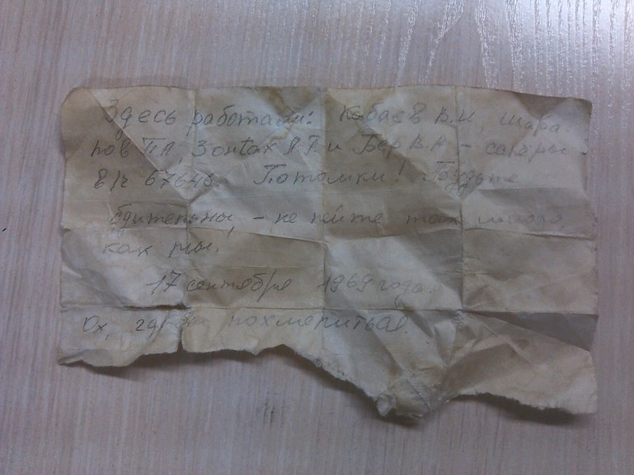

Идет мужик по дороге, к нему подходит другой мужик, дает записку и говорит:
– Сам не читай, дай другому почитать.
Приходит он домой к жене, и дает ей записку. Она прочитала и на него в суд подала. Сидит мужик в суде. Судья его спрашивает:
– Почему жена на тебя в суд подала?
Мужик говорит:
– Иду я, значит, по дороге, ко мне подходит мужик, дает записку и говорит: "Сам не читай, дай другому почитать". Ну я прихожу домой к жене и даю ей почитать. А она на меня в суд подала!
Судья говорит:
– А что в той записке?
Мужик:
– Не знаю.
Судья:
– Дай почитать!
Мужик:
– Нет! Вы меня еще в тюрьму посадите!
А судья говорит:
– Да нет! Как?! Я ведь судья, все по справедливости.
Ну дал мужик ему записку. Судья прочел ее и в тюрьму его посадил. Сидит мужик в тюрьме. И сокамерник его спрашивает:
– А как ты сюда попал?
Мужик рассказывает:
– Иду я, значит, по дороге. Ко мне подходит мужик, дает записку и говорит: "Сам не читай, дай другому почитать!". Пришел домой к жене, дал почитать, – она на меня в суд подала, судье дал почитать, он меня в тюрьму посадил. И вот я здесь!..
Сокамерник спрашивает:
– А что в той записке было?!.
Мужик:
– Не знаю!..
Тюряга говорит:
– А дай почитать!
Тот:
– Да нет! А то ты меня еще убьешь!..
Сокамерник отвечает:
– Да нет, я ведь твой друг по несчастью! Как я с тобой так поступлю?!.
Ну дал мужик ему записку почитать, а тот его взял и убил. И оказался мужик в раю. Ангел его спрашивает:
– Как ты сюда попал?
Мужик:
– Иду я, значит, по дороге. Ко мне подходит мужик, дает записку и говорит: "Сам не читай, дай другому почитать!". Прихожу домой к жене, дал почитать, – она на меня в суд подала! Судье дал почитать – он меня в тюрьму посадил, сокамернику дал почитать – тот меня убил. И вот я здесь...
Ангел спрашивает:
– А что в той записке было?
Мужик:
– Не знаю... И не проси дать почитать! А то еще меня в ад отправишь!..
Ангел говорит:
– Да нет, как? Я ведь Ангел!..
Ну мужик махнул рукой и дал ему почитать. Ангел взял после этого да и отправил его в ад. И вот мужик в аду. Дьявол спрашивает его:
– Ну и как ты здесь очутился? Каких бед натворил?
Мужик:
– Да никаких бед не творил! Иду я, значит, по дороге... Ко мне подходит мужик, дает записку и говорит: "Сам не читай, дай другому почитать!.. ". Ну я пришел к жене, дал ей записку, она прочла и на меня в суд подала, судье дал почитать, он меня в тюрьму посадил, сокамерник прочел, – и меня убил, Ангелу дал почитать, тот меня сюда, в ад, отправил.
А Дьявол его спрашивает:
– Ну так а что в той записке было?
Мужик:
– Да не знаю я!..
Дьявол:
– Дай прочту!
Мужик:
– Ни за что! А то ты меня еще куда-нибудь отправишь!..
Дьявол говорит:
– Куда я тебя могу дальше ада отправить?!.
Ну мужик была – не была, дал ему прочесть. Тот взял и его в Прошлое на пиратский корабль закинул... Пираты обнаружили мужика незнакомого. Подходит главарь и спрашивает:
– Мужик! Ты кто такой и откуда здесь?
Тот рассказывает:
– Ну вот иду я, значит, по дороге... Ко мне подходит незнакомый мужик, дает записку и говорит: "Сам не читай, – дай другому почитать!". Ну прихожу я домой к жене, дал ей записку почитать, а она на меня после этого в суд подала! Судье дал почитать, – он меня в тюрьму посадил. Сокамернику дал почитать, – тот меня убил! Ангелу в раю дал прочесть – тот меня в Ад отправил. Дьявол прочел, разозлился и закинул меня сюда, в Прошлое, на ваш корабль!..
Пират спрашивает:
– Так а что ты не прочел, что в той записке было? Дай почитаю, и тебе потом тоже дам.
Мужик испугался:
– Ни за что не дам записку! А то вы меня еще скрутите веревками и за борт к акулам кинете!
Пират успокаивает:
– Да как, нет. Ручаюсь, не поступлю с тобой так жестоко...
Мужик отдал записку. Пират прочел, приказал скрутить его и кинуть за борт.
... Плывет мужик в море, кое-как удалось ему благополучно доплыть до берега... И подумал: "Как мне все надоело!.. Вот доплыву, и была не была прочту проклятую записку!..".
Развязался он. Достает из кармана записку, разворачивает ее, а там... БУКВЫ ВОДОЙ СМЫЛО!!! )))))))))))))
